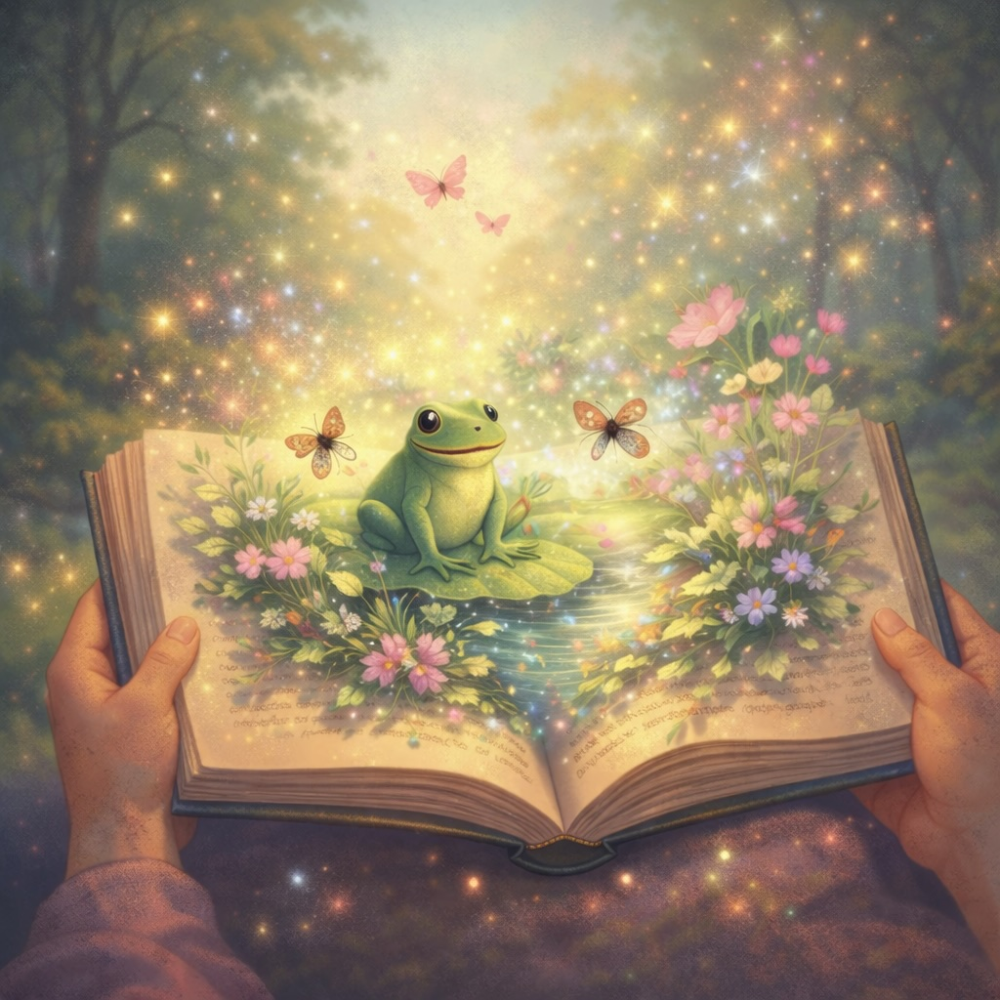

My Creative World

Children’s Stories
Gentle stories for little hearts, created with warmth, imagination, and wonder.

Mandela Effect
A reflective composition exploring memory, mystery, and the Mandela Effect.

Youtube
Oma Robbie Storytime — gentle storytelling and creative videos shared on YouTube.
Poetry
A collection of poems and poetic reflections, gathered with feeling and imagination.

My Father’s Autobiography
A meaningful life story preserved with care, memory, and family love.

Art & Murals
A gallery of creative expression through art, painting, and mural work.
About Robin K
Through Oma Robbie Stories, I share stories, poetry, art, and creative works that are close to my heart. This space brings together my writing, children’s storytelling, family history, and visual art in one gentle home.